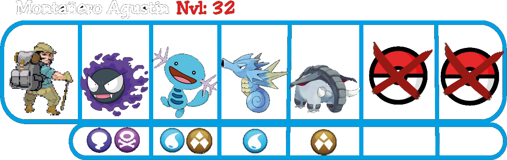
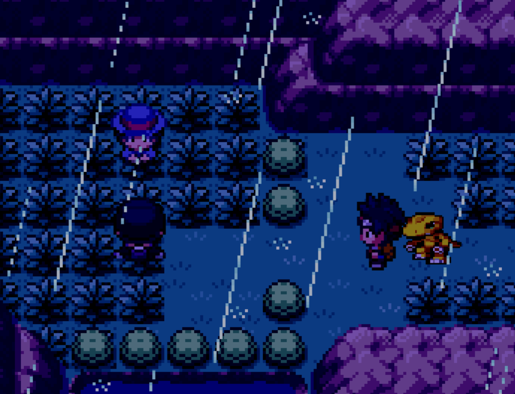

Ruta 3
La ruta 3 es bastante extensa, con una gran cantidad de enemigos en ella, la primera aparecerá nada más cruzar el puente.
Justo en las hierbas detrás de ella encontrarás tu primera Hamburguesa, y aprenderás a crearlas en el fabricador. Siguiendo la ruta encontrarás al siguiente enemigo. Puedes ver todas las Recetas aquí.
Después de derrotar a Raquelita, encontrarás tres posibles caminos. Empezaremos con con el camino hacia el Oeste. Tendrás que romper la roca agrietada y cruzar el puente, para encontrarte con el montañero y un objeto oculto al final del camino.

Después de derrotarlo y coger el objeto oculto del final, vuelve sobre tus pasos para esta vez ir al lado contrario, rompiendo otra roca y cruzando el puente hacia el Norte, encontrándote con unos curiosos Pokemoitos que se lanzarán a atacarte.
Luego de derrotarlos, el traductor comenzará a responder, mostrando las palabras de los Pokemoitos. Gracias a eso, entenderás que antes eran humanos y que el Team Rocket fue quien les convirtió en Pokemoitos, saldrán huyendo antes de que puedas intentar hablar con ellos pero, conseguirás el objeto "Carta de Ace" que se le caerá al Marowak.
Nuevamente, deberás volver sobre tus pasos y esta vez elegir el único camino que queda por explorar, el Norte. Aquí te encontrarás con un arbusto que de momento cortara tu camino, así que dirígete hacia el Oeste, donde encontrarás a un miembro del Team Rocket atacando a una mujer.

Después de derrotar por segunda vez a Grunt, este volverá a huir y la chica te dará las gracias. Se llama María y como agradecimiento a partir de ahora siempre que la veas en un Centro Pokemoito, te ayudara a que tus Pokemoitos recuerden sus movimientos olvidados.
Ahora con todo resuelto, puedes dirigirte hacia el siguiente pueblo, el Pueblo Salchichón. Aunque, justo antes de entrar...
Una luz morada caerá del cielo y sentirás como todo empieza a temblar, tras unos segundos aparecerás en un extraño lugar, con un enorme Digimon frente a ti.
Agumon te dirá que ese Digimon es un Ángel de su mundo, Seraphimon. Este te dirá que no tiene mucho tiempo y te pedirá que le escuches con atención.
Te explicará que el enemigo que intenta destruir el Mundo Digital intenta juntar el poder de los Pokemoitos y los Digimon, sacrificando vidas tanto humanas como digitales para conseguirlo.
Seraphimon te entregará un objeto raro, llamado Circuito Digital. Te recordará que ambos sois la esperanza y que todos confían en vosotros, justo después se despedirá y comenzará a desaparecer al haber perdido toda su energía vital para llevarte a ese lugar temporalmente.
Unos instantes después, aparecera otro poderoso Digimon, pero este será uno malvado que se reirá de la muerte de Seraphimon y te atacará...
Myotismon.
Tipo : Siniestro
Fase : Megacampeón
Hagas lo que hagas, Myotismon ganará. Agumon quedará fuera de combate y el siniestro Digimon te ofrecerá la posibilidad de dejarte vivir si abandonas a tu compañero y te unes a él.
Si eliges abandonar a tu compañero, saltará la pantalla de Game Over y perderás la partida. La única opción correcta es plantarle cara con valor, eso hará que el Digivice reaccione y Agumon volverá a digievolucionar.
Greymon.
Tipo : Fuego
Fase : Campeón
Se convertirá en Greymon y con las fuerzas recuperadas, luchará contra Myotismon con la posibilidad de ganar esta vez.
Después de derrotarle, volvereis al mundo humano. Greymon te dirá que todo ha sido gracias a tu valor y que debéis encontrar el emblema del que os habló Seraphimon antes de morir.
Al llegar al Pueblo Salchichón, el nivel máximo de tus Pokemoitos subirá al 42.
Como siempre, antes de nada, deberías subir el nivel de tus Pokemoitos y utilizar la captura de esta zona antes de explorar todo lo demás.